Co to jest
Inżynier to program na Twoim komputerze. Czyta dane z gry i mówi do Ciebie przez słuchawki: ostrzega przed szybszymi autami, mówi, kiedy zjechać do boksu, co zmienić na postoju, gdzie tracisz czas. Na pytania odpowiada głosem – trzymasz przycisk na kierownicy, mówisz, puszczasz.
Pit wall to strona w przeglądarce (komputer albo telefon). Cały zespół widzi tam na żywo stan auta, rywali, pogodę i grafik zmian kierowców, a kierowcy można wysłać wiadomość, którą inżynier przeczyta.
Możesz jeździć sam (tryb Solo) albo w zespole.
Czego potrzebujesz
- Windows 10 lub 11 i Le Mans Ultimate.
- Słuchawki z mikrofonem i wolny przycisk na kierownicy (albo klawisz na klawiaturze).
- Internet (głos inżyniera, rozpoznawanie mowy i pit wall działają przez internet).
- Opcjonalnie: darmowy klucz Groq – rozpoznawanie mowy i odpowiedzi AI (rozdział AI).
Instalacja (5 minut)
- Pobierz paczkę
PitWallCrew_….zip. Zanim ją rozpakujesz: prawy przycisk na pliku → Właściwości → zaznacz Odblokuj → OK (inaczej Windows może blokować pliki). - Rozpakuj do folderu, np.
Dokumenty\Pit Wall Crew. - Kliknij dwa razy INSTALUJ_KIEROWCA.bat. Instalator pobierze potrzebne składniki (kilka minut), zapyta o zespół, mikrofon i przycisk mówienia i utworzy ikonę Pit Wall Crew na pulpicie.
- W LMU raz: Settings → Gameplay → Enable Plugins = ON (bez tego program nie widzi danych z gry).
Okno aplikacji
Ikona Pit Wall Crew otwiera aplikację. Inżynier uruchamia się sam, a gdy włączysz grę i wyjedziesz na tor – zaczyna mówić.
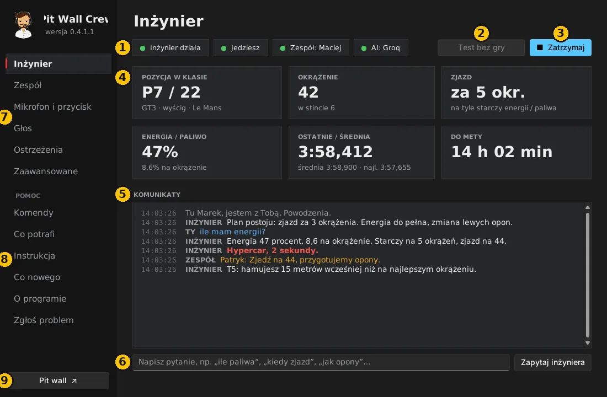
- Stan: czy inżynier działa, czy widzi grę („Jedziesz” albo „podgląd” – gdy jedzie kolega), połączenie z zespołem i AI. Zielone = w porządku.
- Test bez gry – symulowany wyścig. Sprawdzisz głos, mikrofon i pit wall bez uruchamiania LMU.
- Uruchom / Zatrzymaj inżyniera.
- Najważniejsze liczby: pozycja, okrążenie, za ile zjazd, energia albo paliwo, czasy, czas do mety.
- Komunikaty – wszystko, co inżynier powiedział, Twoje pytania i wiadomości od zespołu. Czerwone = pilne.
- Pole pytania – możesz napisać pytanie zamiast mówić.
- Ustawienia – zespół, mikrofon, głos, ostrzeżenia (rozdział niżej).
- Pomoc – lista komend, opis funkcji, instrukcja, zmiany w wersjach, informacje o programie i Zgłoś problem.
- Pit wall – otwiera stronę zespołu w przeglądarce.
Ustawienia
Po każdej zmianie kliknij Zapisz i uruchom ponownie (prawy dolny róg).
Zespół
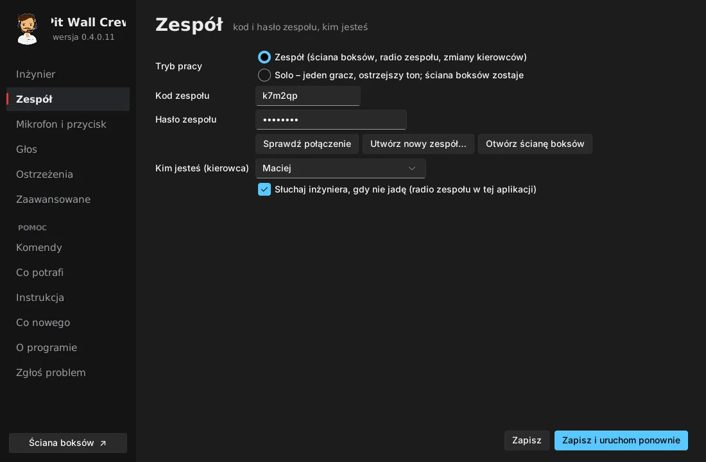
- Solo – jeździsz sam: nie wpisujesz nic więcej. Pit wall nadal działa jako Twój podgląd.
- Zespół – jedna osoba klika Utwórz nowy zespół… (nazwa i hasło) i dostaje kod zespołu (6 znaków). Pozostali wpisują ten kod i hasło. Potem Sprawdź połączenie i wybierz z listy, kim jesteś.
- Kod i hasło przekazujcie sobie tylko prywatnie – kto je zna, widzi stan auta i może pisać do kierowcy.
- Słuchaj inżyniera, gdy nie jadę – gdy jedzie kolega, słyszysz komunikaty jego inżyniera (radio zespołu).
Mikrofon i przycisk
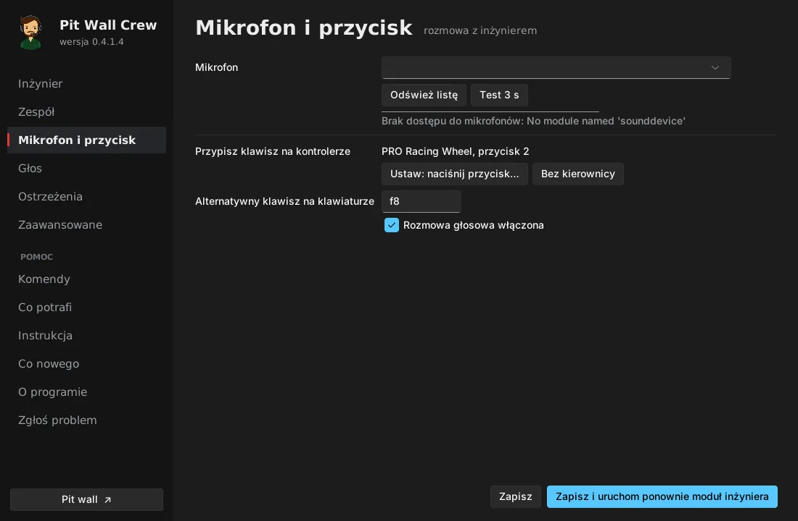
- Wybierz mikrofon i kliknij Test 3 s – powiedz coś i sprawdź, czy pasek się rusza.
- Ustaw: naciśnij przycisk… i naciśnij przycisk na kierownicy, którym będziesz mówić. Można też ustawić klawisz.
Głos
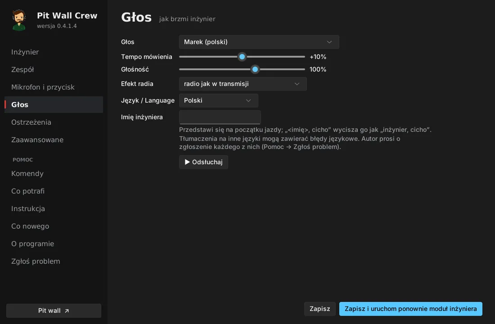
- Głos, tempo, głośność, efekt radia i imię inżyniera. ▶ Odsłuchaj odtworzy próbkę.
- Gdy nadasz imię (np. Marek), inżynier się przedstawi, a „Marku, cicho” go wyciszy.
Ostrzeżenia
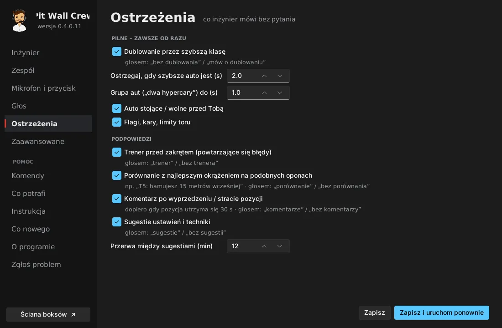
Co inżynier mówi bez pytania: dublowanie przez szybsze klasy (i od ilu sekund), auta stojące na torze, flagi, trener przed zakrętem, porównanie z najlepszym okrążeniem, komentarze po wyprzedzeniu, sugestie ustawień. Wszystko to włączysz i wyłączysz też głosem w trakcie jazdy (np. „bez trenera”).
Zaawansowane
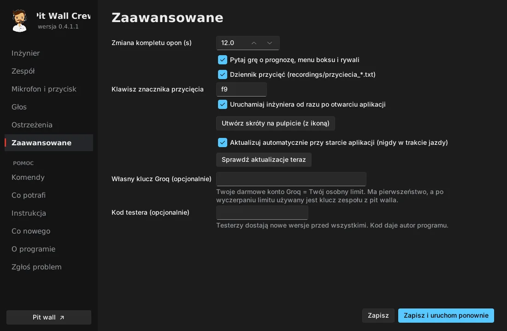
Czas zmiany kompletu opon, automatyczny start inżyniera, skróty na pulpicie, aktualizacje i własny klucz Groq (opcjonalnie – Twój osobny limit).
Rozmowa z inżynierem
Trzymaj przycisk, mów, puść. Naciśnięcie przycisku przerywa też to, co inżynier właśnie mówi.
Przykłady: „ile paliwa?”, „kiedy zjazd?”, „które opony zmienić?”, „kto przede mną?”, „gdzie tracę?”, „jaka pogoda?”, „za ile dubluje hypercar?”, „cisza” (całkowite wyciszenie do następnego naciśnięcia), „tylko pilne”, „powtórz”.
Pełna lista jest w aplikacji: Pomoc → Komendy.
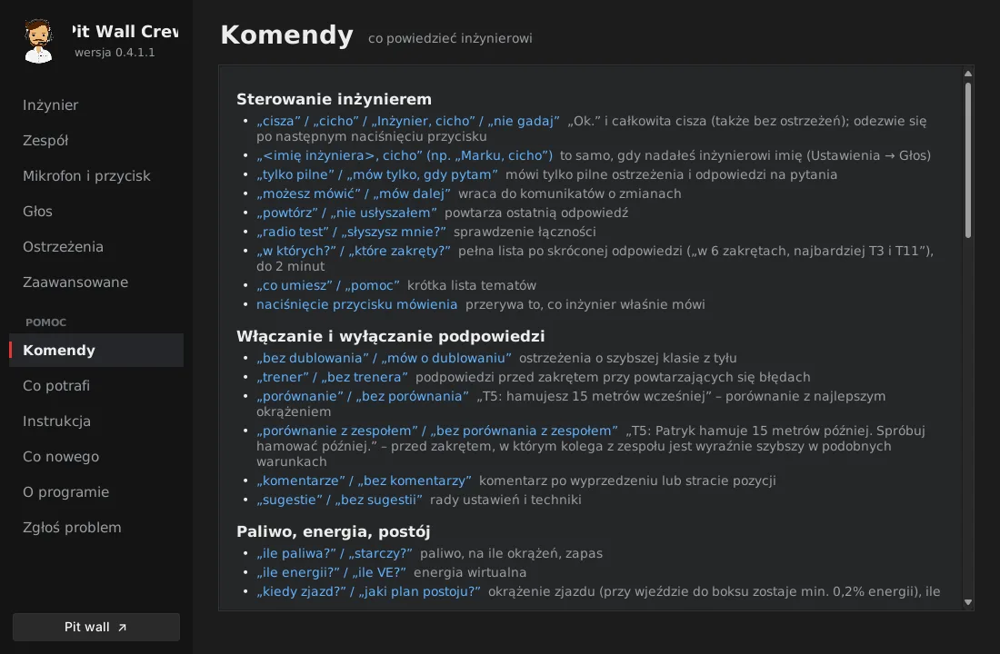
Pytanie, którego program nie zna, trafia do AI (jeśli jest klucz Groq) razem z danymi wyścigu.
AI – darmowy klucz Groq (2 minuty, jedna osoba)
- Załóż darmowe konto na console.groq.com → API Keys → Create API Key → skopiuj klucz.
- Na pit wallu: zakładka Zespół → AI zespołu (Groq) → wklej → Zapisz klucz. Klucz widzą tylko członkowie zespołu. Jeździsz sam? Wklej go w aplikacji: Zaawansowane → Własny klucz Groq.
- W aplikacji pojawi się zielone AI: Groq.
Klucza nikomu nie wysyłaj na czacie – wklej go sam.
Pit wall
Otwierasz go przyciskiem Pit wall w aplikacji albo pod adresem zepansrpl-creator.github.io/Pit-Wall-Crew (logowanie kodem i hasłem zespołu; telefon je zapamięta). U góry wybierasz język, a przyciskiem ☀ / ☾ wygląd: jasny albo ciemny.
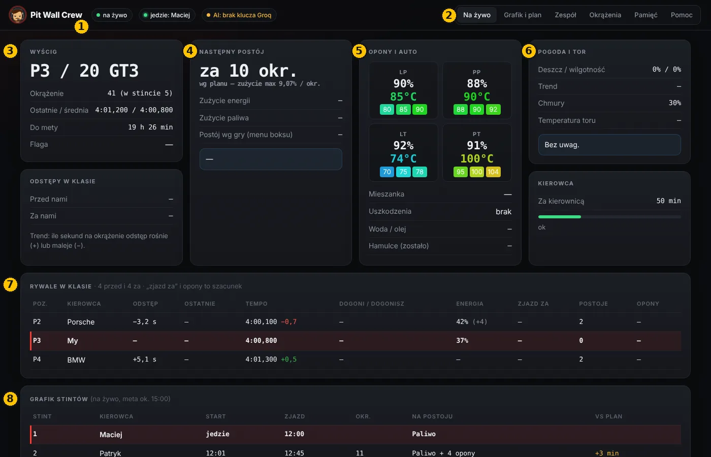
- Stan: czy dane płyną na żywo, kto jedzie, czy działa AI.
- Zakładki: Na żywo, Grafik i plan, Zespół, Okrążenia, Pamięć, Pomoc.
- Wyścig: pozycja w klasie, okrążenie, czasy, czas do mety, flaga.
- Następny postój: za ile okrążeń, zużycie energii i paliwa, co zrobić na postoju.
- Opony i auto: zużycie i temperatury każdej opony, uszkodzenia, silnik, hamulce.
- Pogoda i tor: deszcz, wilgotność, chmury, temperatura toru i uwagi inżyniera.
- Rywale w klasie: odstępy, tempo, kto kogo dogoni, energia, przewidywany zjazd.
- Grafik stintów: kto jedzie, kiedy zmiana, co na postoju, o ile minut grafik przesunął się względem planu. Gdy na dziś nie ma planu, układa się sam dla kierowcy, który jedzie – z długości wyścigu i liczby opon dostępnych w grze.
Niżej na tej stronie są też mapa toru z autami i radio zespołu: „Do kierowcy” (inżynier przeczyta wiadomość), „Zapytaj inżyniera” (odpowiedź głosem), „Zapytaj (tylko tekst)”, „Do pamięci”.
Na telefonie
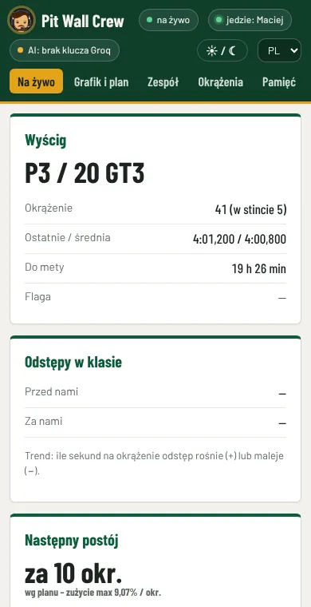
Zakładka Zespół
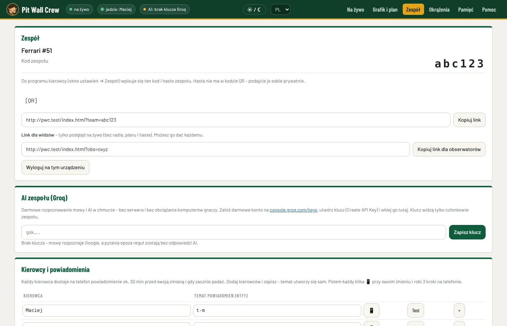
Kod zespołu i kod QR do pit walla, lista kierowców z tematami powiadomień, klucz Groq i link dla widzów – sam podgląd na żywo, bez radia i planu; można go dać każdemu.
Grafik i plan (przed długim wyścigiem, jedna osoba)
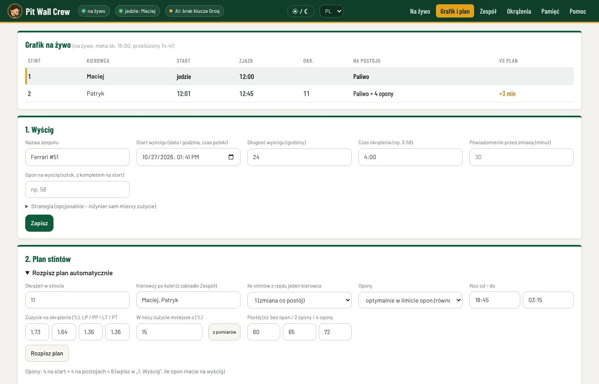
- 1. Wyścig: data i godzina startu, długość, czas okrążenia, ile opon macie na wyścig → Zapisz.
- 2. Plan stintów → Rozpisz plan automatycznie: okrążenia w stincie, kolejność kierowców, zużycie opon (przycisk z pomiarów wpisze zużycie zmierzone w Waszych sesjach), czasy postoju → Rozpisz plan. Program rozdzieli opony tak, żeby zużywały się jak najrówniej.
- W tabeli popraw, co trzeba: kierowca z listy, okrążenia, Lewe / Prawe = zmiana opon po tej stronie → Zapisz plan. Licznik pokaże, czy mieścicie się w oponach.
W wyścigu grafik przelicza się sam z prawdziwego tempa. Inżynier zjeżdża i zmienia opony według planu (chyba że któraś opona nie dojedzie albo zabraknie energii). Plan działa w wyścigu o długości wpisanej w „1. Wyścig”.
Powiadomienia na telefon (każdy kierowca, 2 minuty)
- Zainstaluj darmową aplikację ntfy (Google Play / App Store).
- Na pit wallu: Zespół → przy swoim imieniu kliknij 📱 – zobaczysz swój temat i kod QR.
- W ntfy dotknij +, wpisz temat i Subskrybuj (albo zeskanuj kod QR).
- Kliknij Test przy swoim imieniu – na telefonie przyjdzie „Pit Wall Crew – test”.
Powiadomienie przychodzi ok. 30 minut przed Twoją zmianą, drugie – gdy zmiana przesunie się o 10 minut lub więcej, a także gdy zacznie padać.
Długi wyścig (np. 24 h)
- Kierowca, który jedzie, ma włączony Pit Wall Crew przez cały stint – to jego aplikacja wysyła dane na pit wall i powiadomienia.
- Pozostali mogą wyłączyć grę, program i komputer. Po powiadomieniu na telefon włącz komputer, LMU i Pit Wall Crew, zanim wsiądziesz.
- Plan, grafik, wiadomości, pamięć zespołu i odprawa od poprzedniego kierowcy są w bazie zespołu – program pobierze je sam.
Próba przed wyścigiem (15 minut)
- Wszyscy uruchamiają Pit Wall Crew – zielone Zespół i AI: Groq.
- Jeden kierowca klika Test bez gry. Pozostali otwierają pit wall – dane powinny być „na żywo”.
- Kierowca pyta głosem „ile paliwa?” – odpowiedź słychać u wszystkich.
- Ze pit walla wyślijcie „Do kierowcy” – inżynier przeczyta wiadomość.
Gdy coś nie działa
| Objaw | Co zrobić |
|---|---|
| „Czekam na LMU” mimo włączonej gry | W LMU: Settings → Gameplay → Enable Plugins = ON, potem uruchom grę ponownie. |
| Inżynier mnie nie słyszy / „Nie słyszę Cię” | Mikrofon i przycisk → Test 3 s. Sprawdź wyciszenie na słuchawkach i Windows → Prywatność → Mikrofon. |
| „Zły kod albo hasło zespołu” | Zespół → popraw → Sprawdź połączenie → Zapisz. |
| Pit wall: „brak danych z gry” | U kierowcy musi działać aplikacja z zielonym „Zespół”. |
| „AI: Groq – zły klucz” | Wklej klucz ponownie (pit wall → Zespół → AI zespołu). |
| Każdy komunikat słychać dwa razy | Program działa podwójnie: zamknij aplikację, w Menedżerze zadań zakończ „pythonw”, uruchom raz. |
| Nie przychodzą powiadomienia | Start wyścigu i kierowcy w planie, temat w ntfy, przycisk Test; u kogoś z zespołu działa aplikacja. |
| Gra się przycina | Najczęściej brakuje pamięci karty graficznej: niższe tekstury, mniej widocznych aut i cieni, zamknij inne programy. |
| Windows blokuje pliki | Przed rozpakowaniem: prawy przycisk na paczce → Właściwości → Odblokuj. |
Zgłoś problem albo sugestię
W aplikacji: Pomoc → Zgłoś problem, na pit wallu: zakładka Pomoc. Zgłoszenie trafia prosto do autora. Za Twoją zgodą aplikacja może sama wysłać raport, gdy się zepsuje (bez nagrań głosu, kluczy i haseł) – włączasz to i wyłączasz na tej samej stronie. Szczegóły: Prywatność.
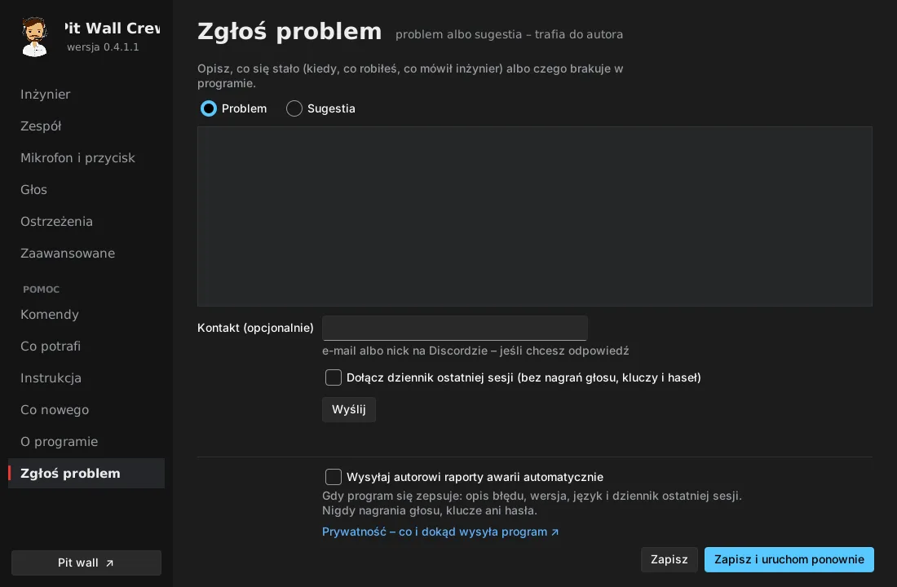